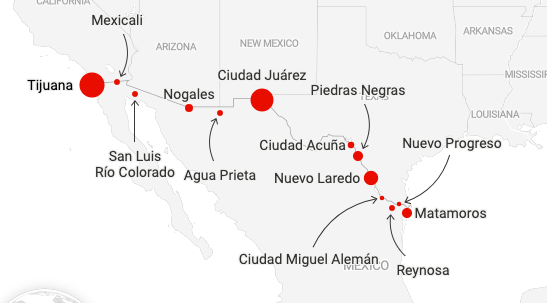
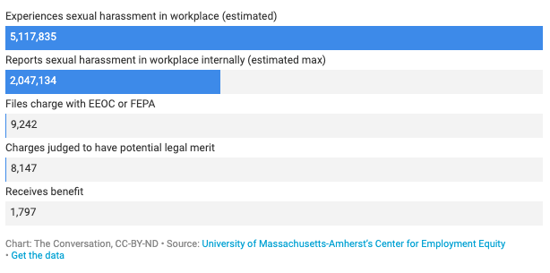
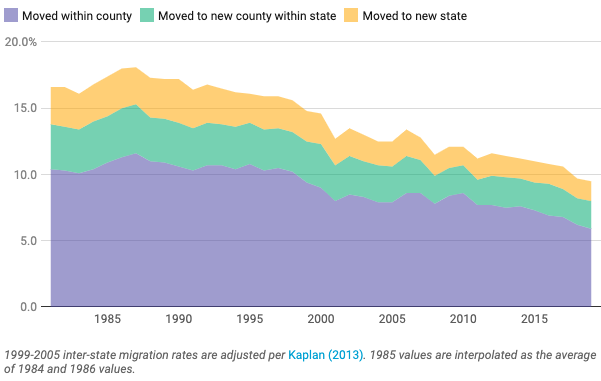
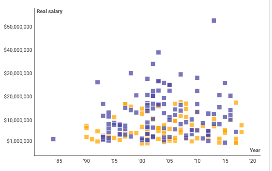
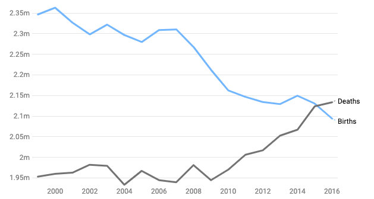

Aviva Hope Rutkin
About
Stories
More

Thousands of asylum seekers left waiting at the US-Mexico border
| Produced at The Conversation
Yes, GPS apps make you worse at navigating – but that’s OK
| Produced at The Conversation
‘Anumeric’ people: What happens when a language has no words for numbers?
| Produced at The Conversation
Why some counties are powerhouses for innovation | Produced at The Conversation
Would you wear yeast perfume? Microbes used to brew scent
| Written for New Scientist
Free bitcoin for students: how will they spend it?
| Written for New Scientist
Falcons learn to hunt by chasing drones
| Written for New Scientist
Facebook can recognise you in photos even if you're not looking
| Written for New Scientist
Sensory substitution
| Told to StoryCollider
Mystery of 101-year-old master pianist who has dementia
| Written for New Scientist
Why are so many of our pets overweight?
| Produced at The Conversation

Nearly all sexual harassment at work goes unreported -- and those who do report often see zero benefit
| Produced at The Conversation

Why Americans are staying put, instead of moving to a new city or state
| Produced at The Conversation
How to talk to your kids about opioids
| Produced at The Conversation
People will follow a robot in an emergency – even if it’s wrong
| Written for New Scientist
The tiny changes that can cause AI to fail
| Written for BBC Future Now
Wireless signal sent through meat fast enough to watch Netflix
| Written for New Scientist
Runners in Alaska cover nearly 600 miles in six days
| Written for New Scientist
Bio-drone simply melts away when it crashes
| Written for New Scientist
The hot new job in Silicon Valley is being a robot's assistant
| Written for New Scientist
Report suggests nearly half of U.S. jobs are vulnerable to computerization
| Written for MIT Technology Review
The US is facing a serious shortage of airline pilots
| Produced at The Conversation

Exploring the data on Hollywood's gender gap
| Produced at The Conversation

The US white majority will soon disappear forever
| Produced at The Conversation
Why do so many Americans now support legalizing marijuana?
| Produced at The Conversation
Bionic arm gives cyborg drummer superhuman skills
| Written for New Scientist
Supplements may contain more than what's on the label
| Written for National Geographic
How Minecraft is helping children with autism make new friends
| Written for New Scientist
Space diaries reveal 6 things on an astronaut's mind
| Written for New Scientist
Books out, 3D printers in for reinvented US libraries
| Written for New Scientist
How trippy version of Mariah Carey Christmas hit fools the brain
| Written for New Scientist